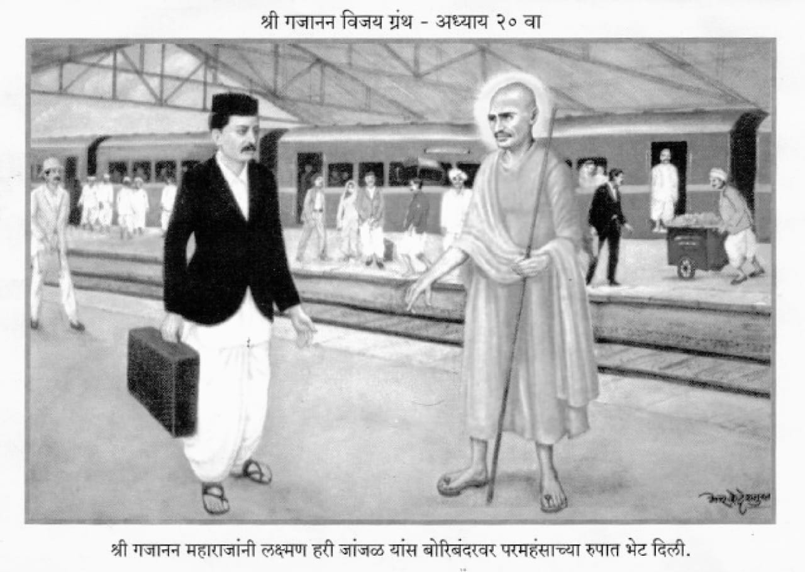

॥ अध्याय २०॥

॥ श्रीगणेशाय नमः ॥
जय जयाजी रुक्मिणीवरा ।
हे चंद्रभागातटविहारा ।
देवा वरदपाणी धरा ।
दासगणूच्या मस्तकीं ॥१॥
तूं भूपांचा भूपती ।
अवघेंच आहे तुझ्या हातीं ।
मग माझी फजीती ।
कां रे ऐसी मांडलीस ? ॥२॥
माझें पाप ताप दहन ।
करा कृपाकृशानें करून ।
राहो आनंदी सदा मन ।
तुझें भजन करावया ॥३॥
यांत अंतर केल्यास ।
वृथा तुला लागेल दोष ।
खर्या थोरांनीं आपणांस ।
बट्टा लावून घेऊं नये ॥४॥
म्हणून हे श्यामसुंदरा ।
राही रुक्मिणीच्या वरा ।
पांडुरंगा परम उदारा ।
माझी इच्छा पूर्ण करी ॥५॥
असो समाधिस्थ झाल्यावर ।
श्रीगजानन साधुवर ।
म्हणूं लागले नारीनर ।
आतां काय ह्या शेगांवीं ॥६॥
शेगांवींचा ज्ञानगभस्ती ।
अस्ता गेला निश्चिती ।
आतां काय तेथें माती ।
राहिली आहे निव्वळ ॥७॥
समुद्राचें आटल्या नीर ।
वा पुष्पतरूचा गेल्या भर ।
कोण त्याचें करणार ।
कौतुक या जगामध्यें ॥८॥
आतां खेपा शेगांवांत ।
करणें आहे कीं निमित्त ? ।
देव नसतां देव्हार्यांत ।
माळा बांधणें व्यर्थची ॥९॥
ऐसें कित्येक बोलती ।
परी ती असे साच भ्रांती ।
महाराजांची दिव्य ज्योति ।
अदृश्य आहे तेच ठायां ॥१०॥
जेवीं इंद्रायणीचे तीरीं ।
ज्ञानेश्वर समाधिस्थ जरी ।
ते आहेत भेटले परी ।
तेच ठायीं भाविकां ॥११॥
तैशीच शेगांवांत ।
श्रीगजाननस्वामी समर्थ ।
ऐसा जयांचा सिध्दान्त ।
दर्शन त्यांना तेथ होतें ॥१२॥
ते विषयींची एक कथा ।
सांगतों मी येथ आतां ।
गणपत कोठाडे होता ।
एक भाविक गृहस्थ ॥१३॥
हा रायली कंपनीचा ।
एजंट शेगांव दुकानीचा ।
नित्य नेम होता त्याचा ।
दर्शनाचा श्रोते हो ॥१४॥
अस्तमानीं प्रतिदिवशीं ।
यावें त्यानें मठासी ।
बैसोनियां समाधीपासीं ।
स्तवन करावें एकनिष्ठें ॥१५॥
एकदां ऐसें वाटलें त्यास ।
अभिषेक करून समाधीस ।
उद्यांच्या विजयादशमीस ।
ब्राह्मणभोजन घालावें ॥१६॥
केली सर्व तयारी ।
अभिषेकाची साजिरी ।
शिधा मठाभीतरीं ।
धाडिला मोठ्या प्रमाणांत ॥१७॥
तैं कांता म्हणे हो प्राणनाथा ! ।
हें तुम्ही काय करितां ।
हाड नाहीं तुमच्या हातां ।
खर्च करण्याच्या बाबतींत ॥१८॥
उद्यां आहे विजयादशमी ।
म्हणून पोरांबाळांसी ।
कपडे अलंकार अंगासी ।
करून घाला कांहीं तरी ॥१९॥
हे अभिषेक ब्राह्मणभोजनें ।
वरचेवरी न योग्य करणें ।
दिलीं आपणां ईश्वरानें ।
चार पोरेंबाळें हो ॥२०॥
फुटका मणि ना अंगावरती ।
मी लंकेची पार्वती ।
गृहस्थाची ही का रीती ? ।
संचय करावा धनाचा ॥२१॥
हें कांतेचें भाषण ।
गणपतरावा न रुचलें जाण ।
तो म्हणे प्रपंचाहून ।
श्रेष्ठ परमार्थ वाटे मला ॥२२॥
तोच त्याच्या कांतेसी ।
स्वप्न पडलें रात्रीसी ।
उगे न छळी पतीसी ।
तो करतो तें करूं दे ॥२३॥
त्यांत तुझ्या बापाचें ।
काय जातें सांग साचें ।
प्रेम अशाश्वताचें ।
वेडे ! हें बाळगूं नको ॥२४॥
यामध्यें न कांहीं सार ।
धन भूचें भूमीवर ।
येतें मात्र बरोबर ।
पाप पुण्य मानवाच्या ॥२५॥
अभिषेक ब्राह्मणभोजन ।
हें पारमार्थिक आहे पुण्य ।
त्याच्यासाठीं वेंचितां न ।
तें न जाय अनाठायीं ॥२६॥
पेरलेल्या बीजापरी ।
त्याची स्थिती होते खरी ।
म्हणून सांगतों तुला पोरी ।
अडथळा त्या करूं नको ॥२७॥
ऐशा पाहून स्वप्नास ।
सांगती झाली पतीस ।
तेणें गणपतरावास ।
हर्ष झाला विबुध हो ॥२८॥
आले का हें प्रत्यंतर ।
महाराज येथेंच साचार ।
सोडून द्यावा कुविचार ।
आजपासून कांहीं तरी ॥२९॥
मुलें बाळें कोणाचीं ।
धनदौलत कोणाची ।
तूं न वाही चिंता त्यांची ।
तें अवघें समर्थाचें ॥३०॥
असो गणपतरावानें ।
पूजन केलें आनंदानें ।
त्या दसर्याच्या मुहूर्तानें ।
खर्चही केला अत्युतम ॥३१॥
या गणपतरावाची ।
निष्ठा समर्थपदीं साची ।
जडली शुध्द स्वरूपाची ।
होती पहिल्यापासून ॥३२॥
लक्ष्मण हरी जाजळाला ।
ऐसाच अनुभव एक वेळां ।
बोरीबंदरावरी आला ।
तो ऐका सांगतों ॥३३॥
कांहीं कामानिमित्त ।
लक्ष्मण गेला मुंबईत ।
हा समर्थाचा होता भक्त ।
पहिल्यापासून विबुध हो ॥३४॥
घरच्या कांहीं कटकटीनें ।
वैताग त्याच्या ला मनें ।
कांहीं व्यापारासंबंधानें ।
आला होता मुंबईस ॥३५॥
असो बोरीबंदरावरी ।
लक्ष्मण आला जाया घरीं ।
तों आगगाडीच्या धक्क्यावरी ।
एक भेटला परमहंस ॥३६॥
आजानुबाहु उंच बांधा ।
दृष्टि नासाग्रासी सदा।
ओंकाराचा सर्वदा ।
जप चालला त्याच्या मुखीं ॥३७॥
तो बोलला लक्ष्मणास ।
तूं गजाननाचा आहेस शिष्य ।
ऐसें असून हताश ।
कां होतोस कळेना ? ॥३८॥
तूं आपुल्या जेव्हां घरीं ।
पुण्यतिथि केलीस खरी ।
चारशें पानांची तयारी ।
करून उमरावतीला ॥३९॥
गोपाळराव पेठकर ।
आणी बापटमास्तर ।
यांचा कैंसा प्रकार ।
घडला तो आण मना ॥४०॥
पुत्रशोक बापटासी ।
झाला असून प्रसादासी ।
तो तुझ्या गेहासी ।
आला होता न सांग ॥४१॥
पेठकराचे ब्राह्मण भले ।
सांग कशानें राहिले ? ।
अरे गजाननस्वामी गेले ।
त्या उभयतांच्या स्वप्नांत ॥४२॥
उपदेश करून दोघांस ।
आणिले होते प्रसादास ।
हें कैसेम विसरलास ? ।
सांग मला ये वेळीं ॥४३॥
खुणेच्या गोष्टी ऐकून ।
साशंक झाला लक्ष्मण ।
म्हणे हा असावा कोण ।
हें कांहीं कळत नसे ॥४४॥
लक्ष्मणें त्या संन्याशाला ।
आदरें नमस्कार केला ।
तो पाहतां गुप्त झाला ।
बोरीबंदर स्टेशनासी ॥४५॥
मग लक्ष्मण येऊन घरीं ।
वागूं लागला पहिल्यापरी ।
प्रतिवर्षी आपुल्या घरीं ।
पुण्यतिथीचा प्रारंभ केला ॥४६॥
अवधूत जयराम खेडकरासी ।
राहीत साहीत गांवासी ।
भेटते झाले पुण्यराशी ।
संन्याशाच्या वेषानें ॥४७॥
एक माधवमार्तंड जोशी ।
कळंब कसूर ग्रामासी ।
आला मोजणी करायासी ।
जमिनीची श्रोते हो ॥४८॥
हा सरकारी नौकर ।
होता रेव्हेन्यु आँफिसर ।
त्याचा गजानन साधूवर ।
पूर्ण होता भरवंसा ॥४९॥
दिवसभर मोजणी केली ।
पुढें त्यास इच्छा झाली ।
अस्तमानाचे समयां भली ।
शेगांवास जाण्याची ॥५०॥
आज गुरुवारचा आहे दिन ।
घेऊं समर्थाचें दर्शन ।
ऐसा विचार करून ।
आज्ञा केली शिपायाला ॥५१॥
जोड आपुली वेगें दमणी ।
जाऊं शेगांवालागूनी ।
रात्र तेथें काढूनी ।
येऊं सकाळीं परत पुन्हां ॥५२॥
तई तो शिपाई कुतुबुद्दीन ।
बोलला कर जोडून ।
आभाळ आलें भरून ।
याचा विचार करावा ॥५३॥
मन नदीला पाणी भलें ।
आहे थोडकें आतां आलें ।
पाही पाणी गढूळ झालें ।
म्हणून केली विनंती ॥५४॥
जोशी म्हणाले त्यावर ।
अरे आतां होऊण नदीपार ।
जा दमणी करी तयार ।
उगीच सबबी सांगूं नको ॥५५॥
शिपायानें जोडिली दमणी ।
आला लगेंच घेऊनी ।
जोशी आंत बैसोनी ।
जाऊं लागेल शेगांवा ॥५६॥
दमणी घातली नदींत ।
तों पाणी आलें अकस्मात ।
जाण्या बैल तटाप्रत ।
अवसर नाहीं राहिला ॥५७॥
झंझावात बळावला ।
कडकडाट करी चपला ।
मन नदीला पूर आला ।
क्षणामाजीं भयंकर ॥५८॥
मेघ वर्षे मुसळधार ।
झंझावात सुटला खरा ।
शेतकर्यांचिया छपरा ।
तो उडवूं लागला हो ॥५९॥
शिपाई म्हणे कुतुबुद्दीन ।
साहेब येथेंच आलें मरण ।
तुम्हीं आम्हांलागून ।
उपाय यासी आतां नसे ॥६०॥
तई माधव मार्तंड जोशी ।
घाबरे झाले निजमानसीं ।
बाहूं लागले समर्थासी ।
करुणायुक्त वचानें ॥६१॥
हे समर्थ गजानना ।
रक्षणा आमुच्या करी प्राणां ।
अशा संकटीं तुझ्याविणा ।
त्राता न कोणी आम्हांतें ॥६२॥
कथा ऐकिली पुराणांत ।
जहाज बुडतां समुद्रांत ।
त्यास संतानें देऊन हात ।
रक्षण केलें सर्वस्वीं ॥६३॥
तूंही संत असामान्य ।
ब्रह्मवेत्ता करूणाघन ।
करी आमुचें रक्षण ।
येऊन या पुरामध्यें ॥६४॥
दमणींत आलें जीवन ।
बैल गेले घाबरोन ।
मग जोशी पु्ढें होऊन ।
बोलते झाले शिपायास ॥६५॥
तूं आतां मागें सर ।
अवलीयाचें भजन कर ।
तेच नेतील आपणां पार ।
त्यांची चिंता करूं नको ॥६६॥
जोशी म्हणाले समर्था ।
अगाध आहे तुझी सत्ता ।
वाटेल तें करी ।
तारी अथवा मारी आम्हां ॥६७॥
कासरा दिला सोडून ।
दोघांनींही मिटले नयन ।
तों काय घडलें वर्तमान ।
तें आतां परियेसा ॥६८॥
ऐशा महापुरांतूनी ।
पैल तटा पावली दमणी ।
उभी राहिली येऊनी ।
सडकेवरी शेगांवच्या ॥६९॥
ऐसा प्रकार पाहतां ।
आनंदले उभयतां ।
पाहा केवढी अगाध सत्ता ।
आहे अवलीया बाबाची ॥७०॥
पुरामाजीं रक्षण केलें ।
निज भक्तां ना बुडूं दिलें ।
जोशी शेगांवाप्रती आले ।
एक घटका रात्रीस ॥७१॥
वंदन केलें समाधीला ।
पालखीचा पाहिला सोहळा ।
दुसरे दिवशीं बहुत केला ।
दानधर्म जोशांनीं ॥७२॥
बाळाभाऊचियापासीं ।
ब्राह्मणभोजन घालण्यासी ।
कांही रुपये अतिहर्षीं ।
जोशी देते जाहले ॥७३॥
साकल्य कथिलें वर्तमान ।
बाळाभाऊलागुन ।
हे नवसाचे ब्राह्मण ।
तुम्ही घाला माझ्यास्तव ॥७४॥
कां कीं मला रजा नाहीं ।
काम जरूरीचें पाही ।
ऐसें सांगून लवलाही ।
जोशी गेले निघून ॥७५॥
एक यादव गणेश सुभेदार ।
होता हिंगणीचा राहाणार ।
हा करीतसे व्यापार ।
वर्हाडांत कापसाचा ॥७६॥
यांस एक सालीं भला ।
दहा हजार तोटा आला ।
त्या चिंतेनें क्षीण झाला ।
कांहीं न सुचे मानसीं ॥७७॥
परी व्यापार सोडवेना ।
चिंता मनींची जाईना ।
फायदा कांहीं होईना ।
त्याच्या मनाप्रमाणें ॥७८॥
फायद्यासाठीं खटपट करी ।
नाना प्रकारें साजिरी ।
स्वस्थ ना बसती व्यापारी ।
राहाती सदा प्रयत्नांत ॥७९॥
हा एकदां वर्ध्यांत ।
आला कांहीं कामानिमित्त ।
उतरण्या गेला घरांत ।
विनायक असिरकराच्या ॥८०॥
तों इतक्यांत तेथें आला ।
एक भिकारी बुध हो भला ।
भिक्षा कांहीं मागण्याला ।
असिरकराच्या घरांत ॥८१॥
पोषाख अवघा मराठी ।
करामाजीं भव्य काठी ।
डोईस होती टोपी मोठी ।
बनातीची मळकट ॥८२॥
कंपवायूनें शरीर ।
कांपत होतें वरच्यावर ।
त्यास पहातां असिरकर ।
चित्तीं परम कोपले ॥८३॥
जा बेट्या मागल्या द्वारीं ।
तेथें मिळेल भिक्षा खरी ।
नको चढूस पायरी ।
ओसरीची ये वेळां ॥८४॥
परी हे बोल त्याचे ।
भिक्षेकरी न मानी साचे ।
येऊन वरती ओसरीचे ।
यादवासन्निध बैसला ॥८५॥
घाल भिक्षा कांहीं तरी ।
असें म्हणून पुढें करी ।
भिक्षापात्र भिकारी ।
यादव सुभेदाराच्या ॥८६॥
यादव म्हणे मनांत ।
भिकारी हा लोचट बहुत ।
नको म्हणत असतां येथ ।
हा बैसला येवोनी ॥८७॥
त्यातें पहात न्याहाळून ।
तईं तो भासला गजानन ।
सुभेदाराकारण ।
शेगांवचा राजयोगी ॥८८॥
दृष्टीस तेज अत्यंत ।
स्वरही त्यांच्या परी सत्य ।
फरक इतुकाच होता त्यांत ।
कंप होता तनूला ॥८९॥
तेज मुद्रा बोलणें ।
होतें समर्थाप्रमाणें ।
तें पाहून ऐसें म्हणे ।
सुभेदार निज चित्तीं ॥९०॥
हा जरी मानूं गजानन ।
तरी ते गेले समाधिस्थ होऊन ।
आतां महाराज कोठून ।
पडतील आमुच्या दृष्टीशीं ? ॥९१॥
कांहीं असो पैसे दोन ।
देऊं भिकार्याकारण ।
श्रीगजानन समजून ।
उहापोह ज्याचा नको ॥९२॥
पैसे घेतले भिकार्यानें ।
आणिक कांहीं देई म्हणे ।
श्रीगजाननकारणें ।
शेरणी वाट गुळाची ॥९३॥
ते वायदे करिसी वरचेवर ।
ते मी न आतां मानणार ।
तोटा दहा हजार ।
तुज व्यापारीं आला ना ? ॥९४॥
त्याचा विचार अंतरीं ।
करून देई कांहीं तरी ।
रुपये मजला लवकरी ।
काढ पाकीट खिशांतून ? ॥९५॥
ऐसें भिकारी बोलतां ।
सुभेदार झाला देता ।
कांहीं रुपये तत्त्वतां ।
पाकिटाचे काढून ॥९६॥
भिकारी म्हणे ते अवसरीं ।
संतुष्ट मी इतुक्यावरी ।
होत नाहीं दे लवकरी ।
आणखी रुपये कांहीं मला ॥९७॥
पुन्हां रुपये काढिले ।
भिकार्यासी अर्पिले ।
तों इतुक्यांत घरांत गेले ।
विनायकराव असिरकर ॥९८॥
यादवराव एकटा बसला ।
होता असिरकराच्या ओसरीला ।
तें पाहून बोलला ।
सुभेदारासी येणें रीतीं ॥९९॥
संशय गजाननाविषयीं ।
कां घेतोस चित्तीं पाही ? ।
कपडे काढून उभा राही ।
माझ्यापुढें ये वेळां ॥१००॥
तुझ्या अवघ्या अंगावर ।
दृष्टि पडूं देई एकवार ।
माझी तेणें होईल दुर ।
व्याधि तुझी यादवा ॥१॥
तूं मजला मुलापरी ।
कां रे लाजसी अंतरीं ? ।
ऐसें म्हणून पाठीवरी ।
हात फिरविला तयांनीं ॥२॥
फिरविला नखशिखान्त ।
अंगावरून त्यानें हात ।
तों आले इतक्यांत ।
असिरकर ओसरीला ॥३॥
रुपये घेऊन भिक्षेकरी ।
गेला द्वाराच्या बाहेरी ।
यादवानें बहुतापरी ।
तपास केला गांवांत ॥४॥
परी न थांग लागला ।
शेवटीं त्यानें निश्चय केला ।
ऐसा आपुल्या चित्ताला ।
कीं हा असावा गजानन ॥५॥
सुभेदार म्हणे मानसीं ।
हे समर्थ असल्या आज दिवशीं ।
फायदा होईल व्यापारासी ।
कांहीं तरी निःसंशय ॥६॥
तों सुभेदाराच्या ।
गाड्या आल्या कापसाच्या ।
विकावयासाठीं साच्या ।
वर्ध्याचिया बाजारीं ॥७॥
विक्री होतां किंमत ।
येती झाली तया बहुत ।
तेणें यादव चित्तांत ।
समाधान पावला ॥८॥
आणि निश्चय ऐसा केला ।
जो भिकारी भेटला ।
तो होता समर्थ भला ।
श्रीगजानन योगीराज ॥९॥
समर्थ आपुल्या भक्तांसी ।
रक्षण करती अहर्निशीं ।
निष्ठा मात्र त्यांचेविषयीं ।
दृढतर पाहिजे मनांत ॥११०॥
भाऊ राजाराम कवर ।
खामगांवीं होता डाँक्टर ।
त्याची तेल्हार्याच्यावर ।
बदली असे जाहली ॥११॥
म्हणून तेथें जाण्याला ।
खामगांवाहून निघाला ।
सहकुटुंब मठांत आला ।
घ्याया श्रींचें दर्शन ॥१२॥
गाडी केली तेल्हार्याची ।
तयारी केली निघण्याची ।
वेळ अस्तमानाची ।
असती झाली ते वेळां ॥१३॥
बाळाभाऊ मठाधिपती ।
तो त्या बोलला येणें रीतीं ।
अहो ऐका माझी विनंती ।
प्रसाद घेऊन जावें तुम्हीं ? ॥१४॥
तुम्ही आजपर्यंत ।
गेलां न येथून उपोषित ।
आज ऐसें विपरीत ।
कां हो मनीं आणिलें ? ॥१५॥
ह्यांतून आहे व्यतिपात ।
हें आणावें मनांत ।
कवर सांगें त्याप्रत ।
मला निकड आहे बहु ॥१६॥
आज रात्रीं प्रसाद घेतों ।
मागल्या रात्रीं निघून जातों ।
नसतां आग्रह मला तो ।
तुम्ही न करा ये काळीं ॥१७॥
बोलल्याप्रमाणें निघाला ।
तेल्हार्यासी डाँक्टर भला ।
घेऊन मुलांमाणसांला ।
दमणीमाजीं बसून ॥१८॥
रात्र होती अंधारी ।
महा भयंकर साजरी ।
वाटे निशा शोक करी ।
निज पतीच्या वियोगें ॥१९॥
तों चमत्कार ऐसा झाला ।
तेल्हार्याचा रस्ता चुकला ।
कोणी न भेटे पंथाला ।
विचारावें कोणा जरी ॥१२०॥
गाडी अरुंद रस्त्यावर ।
दोही बांजूस कांटे फार ।
डी उभी कांठावर ।
एका भव्य तलावाच्या ॥२१॥
म्हणता झाला गाडीवाला ।
साहेब रस्ता आहे चुकला ।
हें ऐकून कवराला ।
आश्चर्य वाटलें मानसीं ॥२२॥
खालीं उतरून जों पहात ।
तों अवघें दिसलें विपरीत ।
अपशब्द बोलला बहुत ।
तो त्या गाडीवाल्याला ॥२३॥
तूं तेल्हार्याचा म्हणून ।
तुझी गाडी केली जाण ।
आडमार्गें आणून ।
आम्हां कैसें सोडिलें ? ॥२४॥
काय होतास दारू प्याला ।
म्हणून हा रस्ता चुकला ।
वाट तुझ्या डोळ्यांला ।
दिसली कशी ना सांग मज ? ॥२५॥
तेल्हार्याचा रस्ता थोर ।
आम्ही हमेशा वाहातों साचार ।
मग आडमार्गावर ।
गाडी कैशी आली तुझी ? ॥२६॥
ऐसें कवर बोलतां ।
गाडीवाला जोडी हातां ।
कां हो मजला शिव्या देतां ? ।
म्यां न अपराध केला कीं ॥२७॥
मी हमेश भाडें करतों ।
तेल्हार्याहून येथें येतों ।
वाटेल तेव्हां गाडी हांकतों ।
रस्ता अवघा माहीत मज ॥२८॥
बैलही ना कोठें वळले ।
तें नीट येथेंच आले ।
तलाव पाहातां स्तब्ध झाले ।
हा न रस्ता तेल्हार्याचा ॥२९॥
मग कवर समजला मनांत ।
हें समर्थाचें आहे कृत्य ।
प्रसाद घेतल्याविरहित ।
कां कीं मी निघालों ॥१३०॥
बाळाभाऊच्या विनंतीला ।
मीं नाहीं मान दिला ।
म्हणून माझा रस्ता चुकला ।
आतां वाट गवसे कशी ? ॥३१॥
हे भयंकर कानन ।
येथें मशी त्राता कोण ।
गजानना ! तुजवांचून ।
रक्षण माझें कराया ॥३२॥
तों तळ्याच्या दुसर्या बाजूला ।
घागरमाळांचा आवाज झाला ।
डाँक्टराच्या कानीं पडला ।
तेणें आला थोडा धीर ॥३३॥
गाडीवाल्यासी म्हणे कवर ।
रस्ता नाहीं फार दूर ।
या चाहुलीचा सुमार ।
धरून गाडी हाण आतां ॥३४॥
तें त्यानें ऐकिलें ।
कांट्यांकुपाट्यांमधून नेलें ।
नीट रस्त्याला लाविलें ।
या आपल्या गाडीस ॥३५॥
हमरस्ता लागतां भली ।
डाँक्टरानें चौकशी केली ।
तों ऐशापरी समजली ।
गोष्ट तया कवरातें ॥३६॥
हें शेगांवचें शिवार ।
आहे अझून साचार ।
मग म्हणाला डाँक्टर ।
चाल शेगांवीं परत आतां ॥३७॥
सूर्योदयाचे समायाला ।
शेगांवासी कवर आला ।
वृत्तांत बाळाभाऊला ।
केला सर्व निवेदन ॥३८॥
मग बाळाभाऊ म्हणाले ।
हेंच आज बरें झालें ।
व्यतिपातीं न जाऊं दिलें ।
समर्थांनीं तुम्हांस ॥३९॥
आज प्रसाद ग्रहण करा ।
उद्यां जा हो तेल्हारा ।
करूं नये कधींच खरा ।
प्रसादाचा इनकार ॥१४०॥
समर्थाचे तुम्ही भक्त ।
म्हणून तुम्हां आणिले परत ।
मानवाचे अवघे बेत ।
सिध्दीस जाणें अशक्य ॥४१॥
संतांच्या जे असेल मनीं ।
तेंच येईल घडोनी ।
भरंवसा त्यांचे चरणीं ।
ठेवून स्वस्थ असावें ॥४२॥
दुसरे दिवशीं प्रसादासी ।
घेऊन गेला तेल्हार्यासी ।
आतां पुढील गोष्टीसी ।
अवधान द्यावें श्रवणातें ॥४३॥
एक रतनसा नामें नर ।
होता जातीनें भावसार ।
तयाचा मुलगा दिनकर ।
होता एक वर्षाचा ॥४४॥
त्यासी सोबणीचा रोग झाला ।
कोणी म्हणती सटावला ।
बालक अवघा सुकून गेला ।
रक्त न राहिलें अंगांत ॥४५॥
दिसूं लागलीं अवघीं हाडें ।
वरतीं नुसतें कातडें ।
वैद्य आणले बडेबडे ।
परी न झाला उपयोग ॥४६॥
मुलगें रडतां राहीना ।
दूधपाणी घेईना ।
ज्वर मुळींच सोडीना ।
पाहा तयाच्या तनूतें ॥४७॥
वैद्य म्हणती रतनसासी ।
आतां औषध न देई यासी ।
हा तुझ्या हातासी ।
लागणें आहे अशक्य ॥४८॥
शक्याशक्य विचार ।
सुज्ञें करावा निरंतर ।
उगीच पूल सागरावर ।
बांधावया जाऊं नये ! ॥४९॥
ऐसें ऐकून रतनसा ।
रडूं लागला ढसढसां ।
शेवटीं विचार त्यानें ऐसा ।
केला आपुल्या मानसीं ॥१५०॥
येवींतेवी मरतें पोर ।
माझें आतां साचार ।
पाहूं करून एकवार ।
उपाय हा शेवटचा ॥५१॥
दिनकराचा अंतकाळ ।
आला होता अति जवळ ।
घरचीं माणसें सकळ ।
लागलीं श्रोते रडावया ॥५२॥
हातपाय गार झाले ।
नेत्रतेज मंदावलें ।
मनगटाचें सोडिलें ।
ठिकाण पाहा नाड्यांनीं ॥५३॥
ऐशा स्थितिमाझारीं ।
रतनसानें पुत्र करीं ।
घेऊन ठेविला असें द्वारीं ।
नेऊनिया समर्थांच्या ॥५४॥
आणि केला त्यांसी नवस ।
पुत्र माझा उठल्यास ।
शेरणी वांटीन तुम्हांस ।
मी पांच रुपयांची ॥५५॥
तुम्ही पावलां अवघ्यांला ।
त्याचा अनुभव द्यावा मला ।
मीही आहे आपुला ।
माझी उपेक्षा करूं नका ॥५६॥
माझें मूल द्वारांत ।
तुझ्या जरी झालें मृत ।
तरी अवघ्या वर्हाडांत ।
तुझी होईल नाचक्की ॥५७॥
अमृतापरी तुझे चरण ।
आले सांगत आम्हां जन ।
हे स्वामी गजानन ।
कृपा करा या बाला ॥५८॥
पुत्र न माझा उठला जरी ।
मी डोकें फोडीन पायांवरी ।
तुझ्या आज निर्धारीं ।
ऐसा निश्चय मनींचा ॥५९॥
अमृततुल्य तुझी दृष्टी ।
त्याची करावी आज वृष्टी ।
नको करूंस मला कष्टी ।
महापुरुषा गजानना ! ॥१६०॥
त्यास कांहीं वेळ झाला ।
तों प्रकार ऐसा घडून आला ।
मूल हातापायांला ।
हालवावया लागलें ॥६१॥
नाडी आली ठिकाणीं ।
रुदन करूं लागलें जाणी ।
तों प्रकार पाहूनी ।
लोक सारे आनंदले ॥६२॥
समर्थकृपा झाल्यावर ।
राहील कोठून त्या दर ? ।
सूर्याचिया समोर ।
तमाचा तो पाड नसे ॥६३॥
दिनकर थोडे दिवसांत ।
होता झाला पूर्वतत ।
नवस असला श्रध्दायुक्त ।
तो फळे हा न्याय असे ॥६४॥
दादा कोल्हटकराचा ।
पुत्र राजा नांवाचा ।
आहे प्रसाद समर्थांचा ।
संतकृपा अमोल खरी ॥६५॥
कन्या रामचंद्र पाटलाची ।
चंद्रभागा नांवाची ।
ज्वान अठरा वर्षांची ।
लाडेगांव सासर जिचें ॥६६॥
ही असतां गरोदर ।
प्रसंग आला दुर्धर ।
प्रसुतीची वेळ फार ।
कठीण स्त्रीजातीला ॥६७॥
लाडेगांवाहून माहेरीं ।
चंद्रभागा आली खरी ।
प्रसूतीस्तव निर्धारी ।
जनरीतीप्रमाणें ॥६८॥
मोठ्या कष्टानें प्रसूती ।
झाली तिची निश्चिती ।
तोंच चंद्रभागेवरती ।
ज्वरें अंमल बसविला ॥६९॥
तो होतां नवज्वर ।
थकून गेले डाँक्टर ।
औषध उपचार केले फार ।
आपुल्या मुलीस पाटलांनीं ॥१७०॥
थोडाबहुत गुण आला ।
व्याधि तितक्यापुरता दबला ।
परी नव्हता मुळींच झाला ।
नामशेष देहांतूनी ॥७१॥
चंद्रभागा आजारी ।
पडूं लागली वरच्यावरी ।
एकदां अकोल्या नेलें खरी ।
औषध तिला द्यावया ॥७२॥
वैद्य विघानें नाना करिती ।
कोणी नळसंग्रहणी बोलती ।
कोणी वैद्य ऐसें म्हणती ।
क्षय झाला मुलीस या ॥७३॥
मेळ एकाचा एकाला ।
नाहीं मुळीं लागला ।
मग पाटलानें विचार केला ।
आतां वैद्य गजानन ॥७४॥
तारो अथवा मारो इसी ।
अंगारा लावा प्रति दिवसीं ।
तीर्थ द्यावें प्यायासी ।
समर्थांच्या पायांचें ॥७५॥
पिता मोठा निष्ठावंत ।
समर्थावरी अवघा हेत ।
हळूहळू त्या पोरीप्रत ।
गुण येता जाहला ॥७६॥
तिला उठवत नव्हतें शय्येसी ।
तीच आली दर्शनासी ।
पायीं चालत मठासी ।
हें महत्त्व अंगार्याचें ॥७७॥
निष्ठावंत ज्याचा भाव ।
तयाशीं पावे देव ।
उपास्यपदीं भाव ।
उपासकें ठेवावा ॥७८॥
रामचंद्राची अंगना ।
जानकाबाई सुलक्षणा ।
परी दैवयोग सुटेना ।
तो भोगल्यांवाचुनी ॥७९॥
वाताचा झाला विकार ।
जानकाबाईस साचार ।
पोट दुखे वरच्यावर ।
कांहीं उपाय चालेना ॥१८०॥
औषध देतां दबे वात ।
पुनः उठे पूर्ववत ।
ऐसा क्रम दिवस बहुत ।
चालला होता श्रोते हो ॥८१॥
त्या वाताची अखेरी ।
होती झाली मस्तकावरी ।
मेंदु बिघडला निर्धारीं ।
गेली जाणीव मावळून ॥८२॥
वेड्यापरी करावें ।
वाटेल तें बोलावें ।
कधीं उपाशीं निजावें ।
कधीं बसावेम जेवत ॥८३॥
कोणी म्हणती लागलें भुत ।
कोणी म्हणती रोग सत्य ।
कांहीं वदू लागले तेथ ।
हा करणीचा प्रकार असे ॥८४॥
कां कीं जितके असती जमेदार ।
त्यांचें असतें बाकडें फार ।
दुबळा आपुला दावी जोर ।
चेटुककरणी करूनियां ॥८५॥
औषधउपाय बहुत केलें ।
जाणतेही आणविले ।
गंडे बहुत बांधिले ।
करीं जानकाबाईच्या ॥८६॥
पाटील घरचा श्रीमंत ।
तो सापडला अडचणींत ।
म्हणून येता झाला ऊत ।
अवघ्यां त्या दांभिकांना ॥८७॥
कोणी अंगांत आणावें ।
वेडाचें निदान करावें ।
कांहीं तरी सांगावें ।
धनास्तव पाटलाला ॥८८॥
तो बिचारा सारें करी ।
कांता बरी न होय परी ।
विचार त्यानें अखेरी ।
ऐशा रीती ठरविला ॥८९॥
वैद्य आतां गजानन ।
जाणतां आतां गजानन ।
देव ऋषि आतां गजानन ।
तो जें वाटेल तें करो ॥१९०॥
माझी बायको सून त्याची ।
ही भावना माझी साची ।
आतां अन्य उपायांची ।
गरज नाहीं आम्हांला ॥९१॥
तूं उद्यांपासून ।
प्रातःकाळीं करी स्नान ।
मठामाजीं जाऊन ।
घाली प्रदक्षिणा समाधीसी ॥९२॥
तें तिनें पतीचें वचन ।
सर्वथैव केलें मान्य ।
समर्थ समाधीलागून ।
घालू लागली प्रदक्षिणा ॥९३॥
गेल्या न त्या मात्र वायां ।
दया आली सद्गुरुराया ।
वातविकार जाऊनियां ।
निर्दोष ती जाहली ॥९४॥
खर्या खर्या संतांची ।
सेवा न जाई वायां साची ।
परी निष्ठा मानवाची ।
जडणें तेथें अशक्य ॥९५॥
समर्थांच्या नंतर ।
बाळाभाऊ गादीवर ।
बसले त्यांचे चमत्कार ।
कांहीं थोडे जाहले ॥९६॥
हे वैशाख वद्य षष्ठीसी ।
शेगांवीं गेले वैकुंठासी ।
त्यांच्यामागून गादीसी ।
बसले येऊन नारायण ॥९७॥
बाळाभाऊ जेव्हां गेले ।
तेव्हां नारायणा स्वप्न पडलें ।
नांदूरें ग्रामीं भलें ।
तें थोडें सांगतों ॥९८॥
हे माळी नारायणा ।
तूं शेगांवास करी गमना ।
रक्षण्या भाविक जनांना ।
ऐसें मला वाटतें ॥९९॥
ऐसें स्वप्नीं सांगून ।
निघून गेले गजानन ।
म्हणून आले नारायण ।
शेगांवामाझारीं ॥२००॥
कांहीं दिवस यांनींही ।
अधिकार चालविला ते ठायीं ।
यांची समाधि झाली पाही ।
चैत्र शुध्द षष्ठीला ॥१॥
पूर्वसुकृतावांचून ।
संतसेवा न घडे जाण ।
संतसेवेचें महत् पुण्य ।
त्या पुण्या पार नसे ॥२॥
श्रीगजाननलीलेचा ।
पार कधीं न लागायाचा ।
अंबरींच्या चांदण्यांचा ।
हिशोब कोणा न लागे कधीं ॥३॥
मी अज्ञान पामर ।
मति नाहीं तिळभर ।
मग हा लीलासागर ।
मुखीं केवीं वर्णू हो ! ॥४॥
त्यानें जें जें वदविलें ।
तें तें मीं कथित केलें ।
लेखणीनें अक्षर लिहिलें ।
परी तें न तिचें सामर्थ्य ॥५॥
ती लेखणी ज्याच्या करीं ।
तोंच अक्षरें काढी सारीं ।
निमित्ताकारण होतें खरी ।
लेखणी ती लिहावया ॥६॥
तैसेंच येथें झालें ।
मी लेखणीचें काम केलें ।
लिहिते लिहविते स्वामी भले ।
श्रीगजानन महाराज ॥७॥
त्यांच्या कृपेंकरून ।
मीं हें केलें लेखन ।
येथें माझें मोठेपण ।
कांहींच नाहीं विबुध हो ! ॥८॥
स्वस्ति श्रीदासगणूविरचित ।
हा गजाननविजय नामें ग्रंथ ।
आतां आला कळसाप्रत ।
कळसाध्याय पुढें असे ॥२०९॥
शुभं भवतु ॥ श्रीहरिहरार्पणमस्तु ॥
॥ इति विंशोऽध्यायः समाप्तः ॥